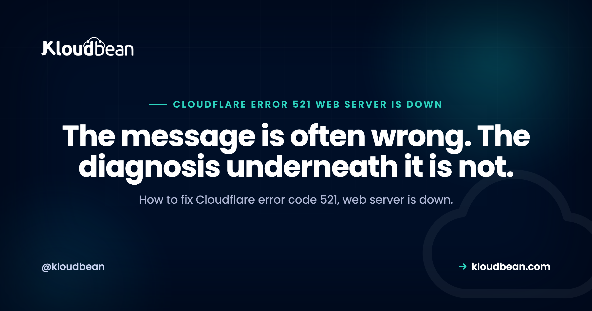

Error Code 521: Web Server Is Down (Even When It Isn't)

Cloudflare error code 521 says "web server is down", and a good share of the time the server is up, healthy, and serving requests happily to anyone who asks it directly. That contradiction is the useful part. What 521 actually reports is narrower and more specific than the wording suggests: Cloudflare tried to open a TCP connection to your origin and the connection was refused. Something on your side answered and said no. Working out what said no is the entire job.
First check whether your web server is actually running with systemctl status nginx, then request your origin IP directly with curl --resolve from outside your network. If the origin answers, your server is fine and something is refusing Cloudflare specifically, which means either your firewall does not allow Cloudflare's IP ranges on ports 80 and 443, or Fail2ban has banned Cloudflare addresses. Both are common, and the second one is the reason 521 often appears for some visitors and not others.
What "connection refused" narrows it down to
A refused connection is a specific event, and it rules a lot out. Something received the packet and sent back a rejection, rather than ignoring it. That distinction matters because it separates 521 from its neighbour 522, which is a timeout, meaning nothing answered at all.
So a 521 means one of a short list of things: no process is listening on that port, or a firewall is configured to reject rather than drop, or a ban rule is actively rejecting the source address. It is never a slow server, never a DNS problem, and never an application bug. That is genuinely helpful, because it means you can ignore your application code entirely while diagnosing this.
Step 1: is the web server running?
sudo systemctl status nginx # or apache2, httpd
sudo systemctl status php8.2-fpm
# What is listening, and on which ports?
sudo ss -tlnp | grep -E ':80|:443'If nothing is listening on 443, you have your answer and the Cloudflare message was accurate after all. Start the service, then find out why it stopped, because a web server that died on its own will do it again. Check the journal and the error log:
sudo journalctl -u nginx --since "1 hour ago" --no-pager | tail -40
sudo tail -50 /var/log/nginx/error.logThe two usual reasons a web server stops and stays stopped: it ran out of memory and was killed, or a configuration change was made and the reload failed. For the first, grep -i "killed process" /var/log/syslog will show the out-of-memory killer at work. For the second, nginx -t tells you in one line whether the current config is even valid.
Step 2: ask the origin directly
If the service is up, prove it can be reached from outside. Run this from anywhere that is not your server and not your office network:
# Replace 203.0.113.10 with your origin IP
curl -svo /dev/null --resolve example.com:443:203.0.113.10 https://example.com
# Is the port open at all from out here?
nc -vz 203.0.113.10 443The reason to test from elsewhere is that your own address is very often already allowed through the firewall. Testing from a permitted address and concluding the server is reachable is the single most common wrong turn in diagnosing a 521.
If this succeeds, your server is healthy and reachable, and something is refusing Cloudflare in particular. Everything from here is about finding that rule.
Step 3: is Cloudflare allowed through your firewall?
Once a site is proxied, your server never hears from visitors again. Every request arrives from a Cloudflare address. So a firewall that allows a curated list of addresses, written before Cloudflare was introduced, will refuse the proxy and produce a 521 for everybody.
Check what your firewall currently permits on the web ports:
# Shorewall
sudo shorewall show rules | grep -E '80|443'
# iptables directly
sudo iptables -L INPUT -n --line-numbers | grep -E '80|443'
# ufw
sudo ufw status numberedCloudflare publishes its address ranges at cloudflare.com/ips-v4 and cloudflare.com/ips-v6, and those ranges need to be allowed inbound on 80 and 443. They are updated occasionally, which is why a rule that worked for two years can start failing without anyone touching it. If you maintain that list by hand, it is worth having something that refreshes it rather than trusting a copy made once.
Step 4: the Fail2ban trap
This is the cause worth reading even if you think it does not apply to you, because it produces the most baffling version of 521 and almost nobody suspects it.
Fail2ban watches your logs and bans addresses that look abusive. Behind Cloudflare, your logs no longer contain visitor addresses. Every line shows a Cloudflare address. So when one genuinely abusive visitor trips a rule, the address Fail2ban bans is Cloudflare's.
The symptom is distinctive: the site works for some people and shows 521 for others, and which group you are in seems to change over time. That is because a subset of Cloudflare's addresses are banned at any moment, and visitors are distributed across all of them. Your server looks perfectly healthy throughout, because it is. Nothing in the Cloudflare dashboard hints at it.
# Are any Cloudflare ranges currently banned?
sudo fail2ban-client status
sudo fail2ban-client status nginx-http-auth
# Look for Cloudflare addresses in the ban list
sudo iptables -L -n | grep -E '104\.|172\.6[4-9]\.|173\.245\.|198\.41\.'
# Unban a specific address
sudo fail2ban-client set nginx-http-auth unbanip 104.16.0.1Unbanning gets you back online. It does not fix anything, and the same thing will happen again within days. The actual fix is Step 5.
Step 5: restore the real visitor IP
This is the permanent repair, and it fixes several problems at once. Configure your web server to read the real client address from the CF-Connecting-IP header that Cloudflare sends, and to trust Cloudflare's ranges as proxies. For nginx, using the real IP module:
# /etc/nginx/conf.d/cloudflare-realip.conf
# Include Cloudflare's published ranges (abbreviated here)
set_real_ip_from 173.245.48.0/20;
set_real_ip_from 103.21.244.0/22;
set_real_ip_from 104.16.0.0/13;
set_real_ip_from 172.64.0.0/13;
# ... plus the remaining published v4 and v6 ranges
real_ip_header CF-Connecting-IP;Then reload and confirm your logs show real addresses again:
sudo nginx -t && sudo systemctl reload nginx
sudo tail -5 /var/log/nginx/access.logThree things start working properly once this is in place. Fail2ban bans actual offenders instead of your own proxy. Your analytics and logs become meaningful again. And any rate limiting you have stops treating all of your traffic as a handful of very busy clients.
My honest view: running Fail2ban behind Cloudflare without this configuration is worse than running no intrusion prevention at all. Without it, the tool cannot see attackers, and the only thing it can effectively block is the proxy your entire site depends on.
Step 6: the less common causes
Wrong port. Cloudflare's proxy only works on a specific set of ports. If your application listens on 8080 and nothing forwards 443 to it, connections to 443 are refused. Check that a reverse proxy is actually terminating on 443 and passing traffic to your app, which is the standard arrangement described in our nginx reverse proxy guide.
Cloud provider security group. A rule at the provider level usually drops rather than refuses, so this more often shows as a 522. It is still worth a look, particularly if the host firewall is clean.
Server out of resources. A machine that has exhausted its connection backlog or hit a process limit will refuse new connections while looking superficially alive. Check load and memory, and look for accept queue overflows:
uptime; free -h
ss -s
netstat -s | grep -i "listen queue"The site was recently moved. If the A record still points at a decommissioned server, you are more likely to see 523, but a machine that exists and has no web server on it gives a clean 521. After any migration, confirm the record points where you think it does.
| Symptom | Most likely cause | Check |
|---|---|---|
| 521 for everyone, constantly | Web server stopped, or firewall blocks Cloudflare | ss -tlnp, then firewall rules |
| 521 for some visitors, comes and goes | Fail2ban has banned Cloudflare ranges | fail2ban-client status |
| Started right after enabling Cloudflare | Firewall never allowed Cloudflare | Cloudflare IP ranges on 80 and 443 |
| Started right after a migration | Stale A record or no web server on the new box | DNS record against real IP |
| Origin works from your office, fails from Cloudflare | Your address is allowed, Cloudflare's is not | Retest from an outside network |
| Appears under traffic spikes only | Connection backlog or process limits | ss -s, load, memory |
What not to do
Two shortcuts circulate widely and both make things worse. The first is pausing Cloudflare or turning the proxy off to make the error go away. It does work, in the sense that the error disappears, and it also removes the protection you put Cloudflare there for while telling you nothing about the cause.
The second is opening ports 80 and 443 to the entire internet to be sure Cloudflare gets through. That fixes the 521 and quietly undoes the main benefit of proxying, since anyone who learns your origin address can now bypass Cloudflare completely and hit your server directly. Allow Cloudflare's published ranges, not everything.
Why this class of error is an operations problem
Read back through the causes: a service that stopped and was not restarted, a firewall rule written before the proxy existed, an intrusion prevention tool acting on the wrong addresses, a stale DNS record after a move, connection limits under load. Not one of them is application code. All of them are server operations.
That is the argument for not doing this yourself. On Kloudbean, Shorewall and Fail2ban come configured rather than left as an exercise, free SSL is issued and renewed automatically, and Cloudflare is available as a paid add-on and included for enterprise accounts, so the proxy and the origin are set up as one system instead of two things you wire together and hope agree. Servers, applications, and databases sit in one dashboard, which matters for exactly this failure, because a firewall change and a proxy change are not in two separate products.
The honest boundary: a managed platform will not stop you from misconfiguring Cloudflare itself, and it cannot prevent a genuinely overloaded server from refusing connections. What it removes is the long tail of stopped services, forgotten firewall rules, and ban lists nobody is watching.

Once error Code 521 is settled
For the whole family of these codes and how to tell them apart, see Cloudflare error codes 520 to 527. The two closest neighbours have their own guides: error 520 and error 525. On the upstream side, 502 Bad Gateway and the nginx reverse proxy setup. When a connection is refused rather than proxied, ECONNREFUSED covers the same idea inside your own app. And for the records these errors rely on, DNS explained.
Read the log, fix it, ship again.
Build logs stream live in the console, deployment history keeps what happened, and the logs viewer separates app errors from web requests, so a failed start is a five-minute read rather than a guessing game.
- ✓ Live build logs
- ✓ Deployment history
- ✓ Logs viewer
- ✓ Managed process restarts
- ✓ Automatic backups
- ✓ Git deploy
Plans from $8/mo · Free migration assistance · Free trial
FAQ
What does Cloudflare error 521 mean?
It means Cloudflare tried to open a connection to your origin server and the connection was actively refused. Despite the wording "web server is down", the server is frequently running fine and something is refusing Cloudflare specifically, usually a firewall rule or a ban list. A refused connection is different from a timeout, which is reported as 522.
How do I fix error code 521?
Check that your web server is listening on 443 with ss -tlnp, then request your origin IP directly with curl --resolve from outside your network. If the origin answers, allow Cloudflare's published IP ranges on ports 80 and 443 and check whether Fail2ban has banned any Cloudflare addresses. Then restore the real visitor IP so the ban list stops targeting the proxy.
Why does error 521 appear when my server is clearly running?
Because "is it running" and "will it accept a connection from Cloudflare" are different questions. A firewall that allows only certain addresses, a Fail2ban ban on Cloudflare ranges, or a service listening on the wrong port all produce a refused connection from a perfectly healthy server. Testing from your own network hides this, because your address is often already allowed.
Can Fail2ban cause a Cloudflare 521 error?
Yes, and it is a common cause of the intermittent version. Behind Cloudflare your logs show Cloudflare addresses rather than visitor addresses, so Fail2ban ends up banning the proxy when a visitor misbehaves. The result is that some visitors see the site and others get 521. Fix it by configuring the real IP module with the CF-Connecting-IP header, then clearing existing bans.
Should I whitelist Cloudflare IPs or just open ports 80 and 443?
Whitelist Cloudflare's ranges. Opening the ports to everyone removes a key benefit of proxying, because anyone who discovers your origin address can then bypass Cloudflare and hit your server directly, skipping whatever protection you set up. Cloudflare publishes the current ranges, and they change occasionally, so review the rule rather than setting it once.
Does pausing Cloudflare fix a 521?
It makes the error disappear because requests stop going through the proxy, but it fixes nothing and removes your protection while you are exposed. Use it as a diagnostic signal at most: if pausing resolves it, you have confirmed the problem is in the path between Cloudflare and your origin rather than in your application.
Why did 521 start right after I moved hosts?
Two likely reasons. Your DNS A record may still point at the old server, in which case Cloudflare is connecting to a machine with no web server on it. Or the new server's firewall has never been told to allow Cloudflare. Confirm the record matches the new address, then check the new firewall rules, since a fresh server does not inherit the old one's configuration.